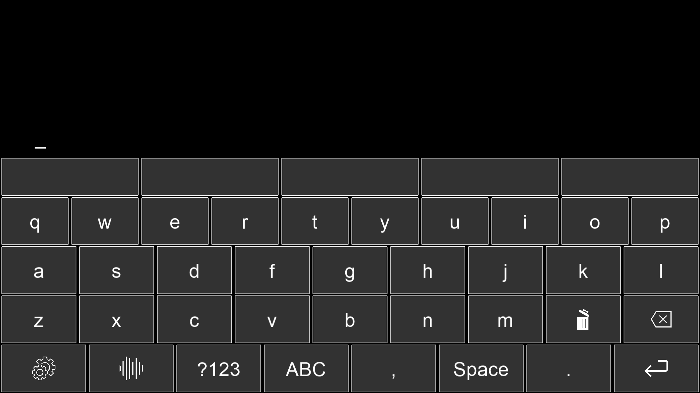

Complete BCI spelling system¶
{kind=link}
Summary¶
This module implements a keyboard for the BCI system developed by MindAffect.
The following features are supported:
Adding a custom, configurable keyboard from a JSON file
Multiple keyboards (sub-keyboards) can be used
Cross-platform usage (Windows, MacOS, Linux)
Predictive text
Text-to-speech
Word correction
In-application BCI calibration
Using almost any language
Saving written text
Features¶
Adding a configurable JSON keyboard¶
Using this keyboard editor custom .json files can be generated that are read into the program. Unlike normal keyboards only one character per key is allowed, much like mobile keyboards, since the BCI has no “shift” key.
More information on this can be found on the Guide to creating custom JSON keyboards
Word prediction and autocompletion¶
The word prediction and autocompletion module uses n-gram frequency lists to predict what words the user is most likely to type next. Using this technique it is possible to easily create and use a custom frequency list for the user. This can enhance the user experience by suggesting for example the names of relatives whom the user wants to address.
Read more about word prediction and autocompletion: word_prediction.py
Word correction¶
The word correction module uses the Symspellpy module which is a Python port for the SymSpell algorithm.
Any language is supported if there is a frequency list for it. If a there is an internet connection, the right language frequency list is downloaded automatically. If not, the create_ngram_file’s -dictionary option can generate such a frequency list for a language.
Read more about word correction: word_correction.py
Text-to-speech¶
Our text-to-speech module supports multiple TTS suppliers.
For offline use, the pyttsx3 library.
For online use, gTTs can be used which uses Google Translate’s TTS api.
For high quality paid online use, Google WaveNet TTS is supported. Only credentials need to be provided.
For more details about text-to-speech: text_to_speech.py
Contents:
- Complete BCI spelling system
- Installation & Usage
- General Modules
- Psychopy-specific modules
- Guide to creating custom JSON keyboards
- Guide to adding new languages
- License